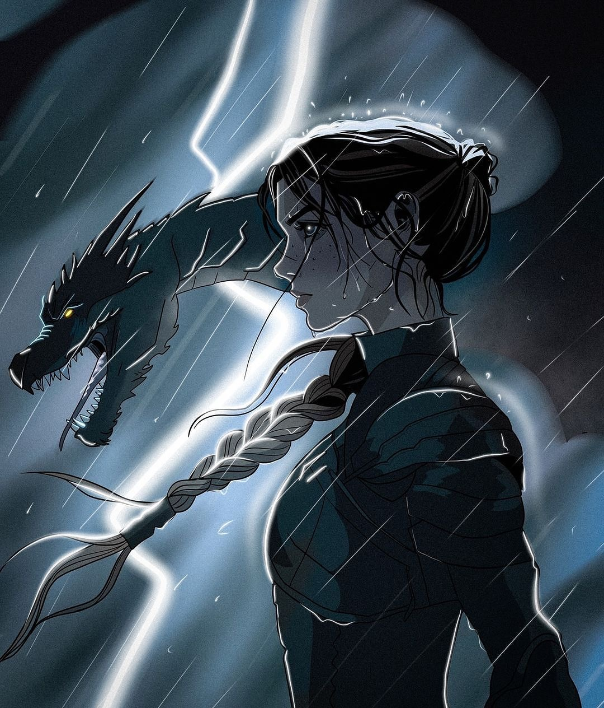

FANTASY
Worlds of wonder
Magic, folklore, and the unknown.
THE COLLECTION / 001
Explore different genres, settings, and atmospheres. Each story is an invitation to somewhere new.
A VISUAL INDEX
A collection of books and imagined places.

Magic, folklore, and the unknown.

Every detail holds a clue.

Stories about connection and change.

Old places and haunting stories.

Journeys that lead to discovery.

Stories that blur the familiar.
Image note: Replace these six image files with your selected photographs or properly credited images. Keep the filenames the same, or update the image paths in this page.
A SMALL READING GUIDE
Choose the atmosphere that sounds best to you.
Your reading suggestion will appear here.
FROM THE READING DESK
It is a digital archive for discovering books, genres, and the fictional worlds that make stories memorable.
Not at all. The collection is here to help you explore and find stories that interest you.
Of course. The archive includes different genres, and readers are welcome to explore them all.